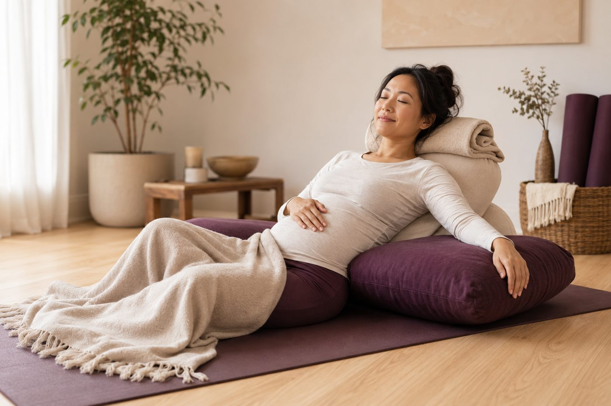

生理期、懷孕、有舊傷，練瑜伽要避開什麼？

這幾天大姨媽來、剛驗到兩條線、或膝蓋去年扭過還沒完全好——這時候還能不能上瑜伽墊？很多人不是咬牙硬撐照做，就是乾脆整個月都不敢動。其實這三種狀況都不是「不能練」，而是「要換一種練法」。搞懂該避開什麼、能保留什麼，你反而能練得更安心。
這三種狀況，共同點是「身體已經在忙了」
生理期、懷孕、舊傷，看起來是三件不相干的事，但對身體來說有個共通點：你的系統正在處理一件大工程——子宮內膜正在剝落重建、正在孕育一個新生命、或某個組織正在默默修復。這時候如果再用「平常那套」硬操，等於在一個已經加班的系統上再堆工作。
所以特殊狀態下，瑜伽的核心心法不是「加法」，是「減法」：不是逼自己照樣做完整套，而是懂得換檔，先把強度和某些角度拿掉。最容易誤會的是，很多人以為「避開」就等於「什麼都不能做、乾脆躺著」。其實不是——減法留下來的，往往是最養身體的那一半：溫和的伸展、有支撐的休息、順順的呼吸。這也正好呼應瑜伽最該破除的迷思：動作從來不是越痛越有效。
這三種狀況只有一條鐵則：先問過你的醫師、或具相關專業的老師，再決定今天怎麼練——身體的訊號，永遠排在課表前面。
生理期：把「倒過來」和「用力頂肚子」先收起來
經期時子宮內膜剝落，骨盆腔（下腹腔）處於充血、相對敏感的狀態，加上前列腺素讓子宮收縮，這正是經痛悶脹的來源之一。這幾天，有兩類動作最好先減量或避開：
- 大倒立（頭倒立、肩立這類把骨盆抬到心臟以上的）：傳統上有「影響經血流向」的說法，這點目前沒有定論；但更實際的理由是，經期骨盆腔充血、身體較敏感，倒立時腹腔壓力改變，多數人會覺得頭脹、不舒服。若你本來就沒有穩定的倒立基礎，這幾天更沒必要勉強。
- 強力腹壓、劇烈核心：像捲腹式的深層腹肌收縮、或快節奏的連續流動，會拉高腹腔壓力，可能加重下腹的悶脹與痙攣。
那可以做什麼？溫和的前彎、有支撐的開髖、貓牛式順順活動腰背，還有低能量的日子也能做的修復瑜伽——用抱枕、毛毯把身體撐住，讓副交感神經接手，反而幫助放鬆骨盆周圍、緩解不適。要記住的是，生理期不是「絕對不能動」；很多人動一動、順順呼吸，比整天縮著更舒服，關鍵只是把「用力」換成「放鬆」。
懷孕：這不是「照常練、小心一點」就好
懷孕期間身體變化很大，而且有些原則跟平常完全相反。第一個要知道的是荷爾蒙：鬆弛素（relaxin）會讓全身韌帶、關節都變鬆，為生產做準備，但副作用是你會「看起來更軟」，很容易不小心拉過頭、傷到已經變鬆的關節。所以孕期絕對不是追求更深、更大角度的時候。加上重心前移、腹部隆起，有幾類動作要明確避開：
- 趴姿（俯臥）：直接壓迫腹部，隨著肚子變大完全不適合。
- 深度扭轉：會擠壓、旋轉腹腔，孕期要改成「開放式扭轉」——往打開的方向轉、不壓到肚子。
- 長時間仰臥：大約進入中期（約 16 週）後，仰躺太久，變大的子宮會壓迫下腔靜脈、影響血液回流，可能頭暈噁心，這叫「仰臥低血壓」。需要躺時多改側躺、或墊高上半身。
- 強腹壓核心（捲腹、船式）：孕期腹直肌本來就會被撐開（腹直肌分離），硬做強力腹肌收縮可能加重分離，該練的是溫和的深層核心與骨盆底肌。
但最重要的其實是這一句：懷孕練瑜伽，一定要找受過「產前瑜伽（prenatal）」專業訓練的老師，並先取得你產檢醫師的同意。這不是「照常上課、自己小心一點」就能涵蓋的——每個孕期階段能做的都不一樣，某些孕期狀況更需要完全避開特定動作。孕期的第一原則，是把判斷交給專業，而不是交給網路影片或一股勇氣。
舊傷：不是不能練，是要「繞過去」而且要說出來
拉傷過的腿後肌、扭過的腳踝、開過刀的膝、有椎間盤問題的腰——舊傷部位通常有兩個特點：一是組織修復後可能留下疤痕、活動度和力量還沒完全回來；二是身體很聰明，會自動「代償」，用旁邊的肌肉關節去避開痛點，久了反而養出新的失衡。面對舊傷，把握三個原則：
- 避開直接刺激傷處的角度與負荷：不是整條腿都不能動，而是那個會讓傷處「喊痛」的特定方向先繞過。痛是訊號，不是要征服的對象。
- 一定要告訴老師：這是最多人略過、卻最關鍵的一步。很多人怕麻煩、或想「看起來跟大家一樣」，就把舊傷藏起來。但老師知道了，才能給你替代動作、調整輔具、幫你盯著別代償。藏起來硬做，等於把自己推向二次受傷。
- 復原後，往往要「把周邊重新練回來」：例如腳踝扭傷後，周圍穩定的肌群會變弱，適度、循序地把力量練回來，比一直保護不動更能防止再犯——但這要在不痛的範圍內、最好有專業陪著進行。
壁繩在這些時候特別好用，因為它剛好擅長「留下溫和的、拿掉勉強的」。繩子從牆上給你支撐和借力，做前彎、開髖、後彎時能分擔一部分體重，你不必用受傷的部位硬扛，也不用為了做到某個角度而用力頂；想休息的日子，還能把身體「掛」在有支撐的姿勢裡，接近修復的效果。更重要的是現場有老師——你把生理期、舊傷、或懷孕（需先經醫師同意、並由具產前專業的老師帶）的狀況講清楚，老師就能即時幫你換動作、調輔具，把「今天該避開什麼」變成看得見的安排。想更了解低能量的日子怎麼溫和地動，也可以參考壓力大、生理期時怎麼溫和地動一動。
在調整練習之前，先讓老師看清楚你現在的身體
AI 體態檢測在教室現場做，用鏡頭把你的站姿、左右差和舊傷可能造成的代償看出來，老師再依你的身體狀況給一個安全的起點，不用自己盲猜。
加 LINE，預約檢測（首次 $199）→今天可以先記住的一件事
這三種狀況，記一句話就好：當身體已經在處理一件大事的時候，瑜伽要做的是「陪伴」，不是「挑戰」。避開該避開的、留下溫和的，並且——生理期不適嚴重、懷孕、或身上有舊傷，都先問過醫師或具相關專業的老師，再上墊。改變不用急著一次到位，把安全放在進度前面，你才能一直、舒服地練下去。
本頁為體態與姿勢的一般衛教與練習分享，非醫療診斷或治療。若有疼痛、舊傷或特殊病史，請先諮詢合格醫療專業人員。